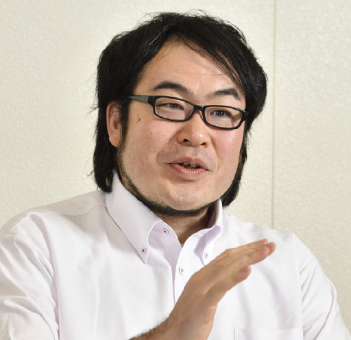

山田 浩史
|

|
准教授
東京農工大学大学院工学研究院先端情報科学部門
工学府 産業技術専攻(知能システム情報工学専攻兼務)
工学部 知能システム情報工学科
〒184-8588
東京都小金井市中町2-24-16 小金井キャンパス
居室: 12 号館 521 室
主催研究室: Advanced Systems Group
メール: hiroshiy [at] cc.tuat.ac.jp,
Tel/Fax: +81-42-388-7154
|
専門
- オペレーティングシステム
- システムソフトウェア
- ディペンダブルシステム
職歴
- 2012年10月〜: 東京農工大学大学院工学研究院先端情報科学部門 准教授
- 2012年8月〜2012年9月: デューク大学訪問研究員
- 2009年4月〜2012年9月: 慶應義塾大学大学院理工学研究科 特任助教
学歴
- 2009年3月: 慶應義塾大学大学院理工学研究科開放環境科学専攻 修了
- 2006年3月: 電気通信大学大学院電気通信学研究科情報工学専攻 修了
- 2004年3月: 電気通信大学電気通信学部情報工学科 卒業
論文(selected) (全論文リスト: こちら か pdf
)
- Reboot-based Recovery of Unikernels at the Component Level
T.Wada, and H.Yamada, DSN '24.
- DBMS-assisted Live Migration of Virtual Machines
K.Asanuma, and H.Yamada, IEEE TC.
- Graceful ECC-uncorrectable Error Handling in the Operating System Kernel
T.Iguchi, and H.Yamada, ISSRE '22.
- A Multi-variant Execution Environment for Securing In-memory KVSes
S.Enomoto, and H.Yamada, EDCC '22.
Distinguished Paper.
- Hardening In-memory Key-value Stores against ECC-uncorrectable Memory Errors
T.Shimomura, and H.Yamada, DSN '22.
- GLoop: An Event-driven Runtime for Consolidating GPGPU Applications
Y.Suzuki, H.Yamada, S.Kato, and K.Kono, SoCC '17.
- GPUvm: Why Not Virtualizing GPUs at the Hypervisor?
Y.Suzuki, S.Kato, H.Yamada, and K.Kono, USENIX ATC '14.
- Towards fast OS rejuvenation: An experimental evaluation of fast OS reboot techniques
A.Bovenzi, J.Alonso, H.Yamada, S.Russo, and K.S.Trivedi, ISSRE '13.
- Traveling Forward in Time to Newer Operating Systems using ShadowReboot
H.Yamada, and K.Kono, VEE '13.
- Phase-based Reboot: Reusing Operating System Execution Phases for Cheap Reboot-based Recovery
K.Yamakita, H.Yamada, and K.Kono, DSN '11.
- Enforcing Appropriate Process Execution for Exploiting Idle Resource from Outside Operating Systems
Y.Abe, H.Yamada, and K.Kono, EuroSys '08.
- FoxyTechnique: Tricking Operating System Policies with a Virtual Machine Monitor
H.Yamada, and K.Kono, VEE '07.
受賞
- 学長特別表彰(高大連携の発展に寄与)，(東京農工大学，2024年)
- Distinguished Paper (18th European Dependable Computing Conference (EDCC'22), 2022 年)
- ISS 功労賞 (電子情報通信学会，2022 年)
- 論文賞 (情報処理学会，2013 年)
- 論文賞 (情報処理学会，2010 年)
- 論文賞 (情報処理学会，2009 年)
- IPSJ Digital Courier 船井若手奨励賞 (船井情報科学振興財団，2009 年)
- 山下記念賞 (情報処理学会，2008 年)
- IPSJ Digital Courier 船井若手奨励賞 (船井情報科学振興財団，2008 年)
- 最優秀学生発表賞 (情報処理学会 OS 研究会，2007 年)
- 目黒会賞 (電気通信大学，2006 年)
指導した学生さんの受賞
- 最優秀若手発表賞 岡田 寿希哉 IPSJ 第165回OS研究会, 2024
- 優秀若手発表賞 吉田 紗和子 IPSJ 第164回OS研究会, 2024
- コンピュータサイエンス領域賞 笠原 一真 IPSJ, 2024
- 最優秀若手発表賞 武田 一希 IPSJ 第163回OS研究会, 2024
- 最優秀若手発表賞 笠原 一真 IPSJ 第162回OS研究会, 2024
- 最優秀若手発表賞 根津 直也 IPSJ ComSys2023, 2023
- コンピュータサイエンス領域賞 和田 健 IPSJ, 2023
- ICSS 研究賞 榎本 秀平 IEICE ICSS研, 2023
- 最優秀若手発表賞 畑山 大地 IPSJ 第159回OS研究会, 2023
- 優秀若手発表賞 谷本 陽祐 IPSJ 第159回OS研究会, 2023
- 最優秀若手発表賞 和田 健 IPSJ 第158回OS研究会, 2023
- CSEC 優秀研究賞 榎本 秀平 IPSJ 第98回 CSEC 研究会, 2022
- 優秀若手発表賞 根津 直也 IPSJ 第155回OS研究会, 2022
- コンピュータサイエンス領域賞 井口 卓海 IPSJ, 2022
- 優秀若手発表賞 井口 卓海 IPSJ 第152回OS研究会, 2021
- 優秀若手発表賞 榎本 秀平 IPSJ ComSys2020, 2020
- 最優秀学生発表賞 下村 剛志 IPSJ 第146回OS研究会, 2019
- コンピュータサイエンス領域賞 寺田 献 IPSJ, 2018
- 企業賞 Fujitsu 賞 佐藤 克矢 WebDB Forum 2017, 2017
- 最優秀学生発表賞 寺田 献 IPSJ 第141回OS研究会, 2017
- コンピュータサイエンス領域賞 小林 直登 IPSJ, 2017
- 最優秀学生発表賞 清水 祐太郎 IPSJ 第140回OS研究会, 2017
- 最優秀学生発表賞 中嶋 将人 IPSJ 第139回OS研究会, 2017
- コンピュータサイエンス領域賞 尾板 弘嵩 IPSJ, 2016
- 最優秀学生発表賞 小林 直登 IPSJ ComSys 2016, 2016
- 学生奨励賞 高橋 祥平 WebDB Forum 2016, 2016
- 最優秀学生発表賞 寺田 献 IPSJ 第136回OS研究会, 2016
- 最優秀学生発表賞 尾板 弘嵩 IPSJ 第135回OS研究会, 2015
- コンピュータサイエンス領域賞 福地 開帆 IPSJ, 2015
- 最優秀学生発表賞 小林 直登 IPSJ 第133回OS研究会, 2015
- 山下記念研究賞 鈴木 勇介 IPSJ, 2014
- 最優秀学生発表賞 福地 開帆 IPSJ 第129回OS研究会, 2014
- 最優秀学生発表賞 古藤 明音 IPSJ 第128回OS研究会, 2014
- 最優秀学生発表賞 鈴木 勇介 IPSJ 第125回OS研究会, 2013
- コンピュータサイエンス領域賞 吉村 剛 IPSJ, 2013
- 最優秀学生発表賞 吉村 剛 IPSJ 第121回OS研究会, 2012
- 最優秀学生発表賞 本橋 剛 IPSJ 第112回OS研究会, 2009
学会活動
- The 55th Annual IEEE/IFIP International Conference on Dependable Systems and Networks (DSN '25), A TPC member
- Embedded and Real-Time Computing Systems and Applications (RTCSA), A member of the steering committee
- The 29th IEEE Int'l Conf. on Embedded and Real-Time Computing Systems and Applications (RTCSA '23), General chair
- The 11th ACM SIGOPS Asia-Pacific Workshop on Systems (APSys '20), Registration chair
- The 24th IEEE Int'l Conf. on Embedded and Real-Time Computing Systems and Applications (RTCSA '18), Financial chair
- The 6th ACM SIGOPS Asia-Pacific Workshop on Systems (APSys '15), Local arrangement chair
- The 21st IEEE Pacific Rim Int'l Symp. on Dependable Computing (PRDC '15), Publicity co-chairs
- Int'l Workshop on Software Aging and Rejuvenation (WoSAR), Program Committee 2013〜, etc.
- 情報処理学会 OS 研究会 運営委員 2023 年度 〜
- 情報処理学会論文誌コンピューティングシステム編集副委員長 2023 年度 〜
- 日本ソフトウェア科学会コンピュータソフトウェア編集委員 2020 年度 〜 2023 年度
- 電子情報通信学会・システムソサエアティ英文論文誌副委員長 2019 年度 〜 2020 年度
- 情報処理学会 OS 研究会 運営委員 2018 年度 〜 2021 年度
- 情報処理学会論文誌コンピューティングシステム編集委員 2015 年度 〜 2018 年度
- 電子情報通信学会・システムソサエアティ英文論文誌編集委員 2015 年度〜 2018 年度
- 情報処理学会プログラミングシンポジウム 幹事 2013 年度〜 2018 年度
- 情報処理学会 OS 研究会 幹事 2014 年度〜 2017 年度
- 日本ソフトウェア科学会ディペンダブルシステム研究会(DSW) 幹事 2013 年度 〜2015 年度
- 情報処理学会若手研究者の会 メンバー 2013 年度〜2015年度
- Annual Meeting on Advanced Computing Systems and Infrastructure (ACSI) プログラム委員 2015 年
- 並列/分散/協調処理に関するワークショップ(SWoPP) 組織委員長 2015 年度
- 並列/分散/協調処理に関するワークショップ(SWoPP) 組織副委員長 2014 年度
- 並列/分散/協調処理に関するワークショップ(SWoPP) 組織委員 2013, 2016 年度
- 先端的計算基盤システムシンポジウム (SACSIS) プログラム委員，2011 年〜2013 年
- コンピュータシステムシンポジウム (ComSys) プログラム委員，2009 年〜2013 年
- 情報処理学会 OS 研究会 運営委員 2010 年度〜2013年度
- 情報処理学会 OS 研究会 幹事補佐 2013 年度
招待講演
- Towards Making Operating Systems Resilient，(基調講演，SPA++ワークショップ, 2025 年 3 月)
- Reboot-Based Recovery of Unikernels at the Component Level，(トップカンファレンス凱旋講演，第36回コンピュータシステムシンポジウム(ComSys2024), 2024 年 12 月)
- Beyond Reboot-based Recovery: Making System Software Resilient with Software-surgery，A Keynote on the 16th Int'l Workshop on Software Aging and Rejuvenation (WoSAR'24), co-located with the 35th IEEE Int'l Symp. on Software Reliability Engineering (ISSRE'24), Oct., 2024
- DBMS-assisted Live Migration of Virtual Machines，(トップカンファレンスセッション，第23回情報科学技術フォーラム(FIT2024), 2024 年 9 月)
- あらゆる障害を乗り越えるシステムソフトウェアを目指して，
(東京大学大学院情報理工学系研究科コンピュータ科学専攻，専攻講演会，2023 年 7 月)
- Response to “Full Virtualization for GPUs Reconsidered”, The 14th Annual Workshop on Duplicating, Deconstructing and Debunking (WDDD’17), co-located with the 44th Int’l Symp. On Computer Architecture (ISCA’17), Jun., 2017
- OSコミュニティ視点からのビッグデータ基盤技術，(ビッグデータ基盤技術の潮流，パネリスト，2017 年 IEICE 総合大会，2017 年 3 月)
- 高信頼・高利便なクラウド環境を実現する基盤システムソフトウェア
(ビッグデータ基盤の完成に向けて，パネリスト，第 159 回 DBS，第 115 回 IFAT 合同研究会, 2014 年 8 月)
- システムソフトウェアにおける "再生" 技術，
(第 8 回再生可能集積システム時限研究会，2013 年 10 月)
- Traveling Forward in Time to Newer Operating Systems using ShadowReboot，
(特別招待講演，日本ソフトウェア科学会，2013 年 9 月)
- 高信頼クラウド環境を目指して 〜システムソフトウェアからのアプローチ〜，
(九州大学 System LSI Lab., 2012 年 8 月)
- 先端技術を "応用" するシステムソフトウェア研究，
(慶應義塾大学 SFC CI セミナー，2011 年 11 月)
- 大規模計算処理環境を支えるシステムソフトウェア技術，
(日本応用数理学会 2011 年度年会，2011 年 9 月)
- 面倒くさがりが切り開くシステムソフトウェアの研究，
(ここがグレイト ! こんなに使える私の研究，パネリスト，BoF セッション，SWoPP 2008，2008 年 8 月)
- FoxyTechnique: 仮想マシン技術を用いた OS の資源管理ポリシーの変更，
(第 9 回仮想化技術勉強会，2007 年 6 月)
|